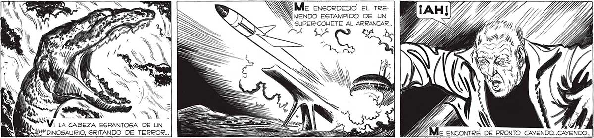
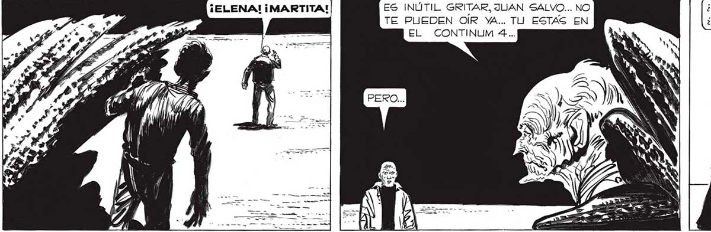
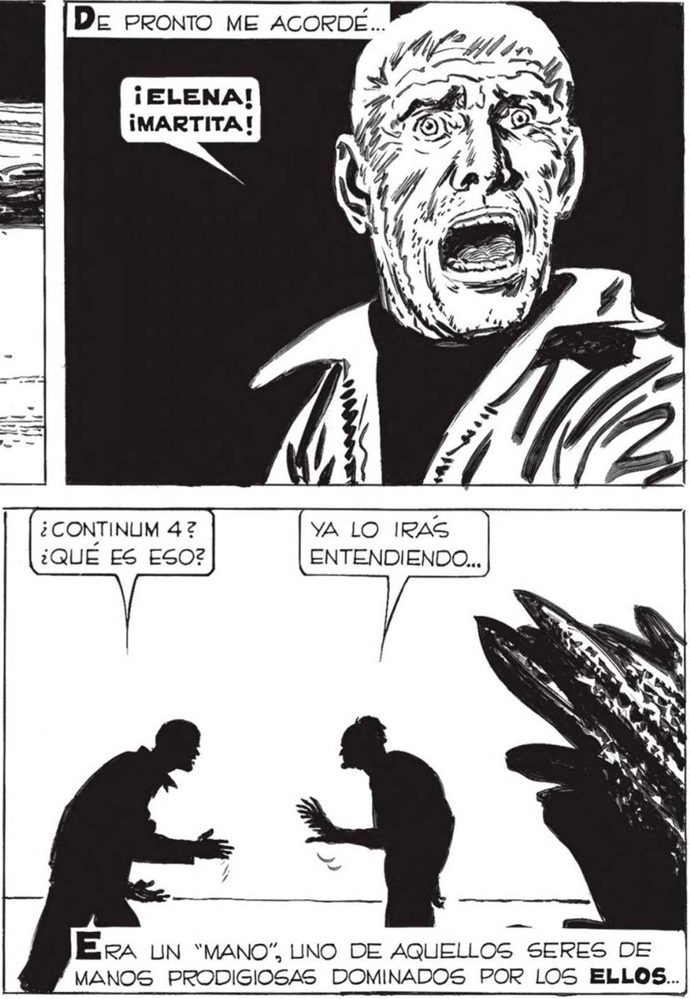

357 Ñ . N Me ENSORDECIO EL TRENY MENDO ESTAMPIDO DE UN . SUPER-COHETE AL ARRANCAR... z os N Ps AAN A Z = Vi LA cAsezA ESPANTOSA DE UN = Ss / 5 y ya 7777 A S ll o osauRIo GRITANDO DE TERROR.. E ===> _ E AAA VIT, ME ENCONTRÉ DE PRONTO CAYVENDO..CAYENDO.. Deu PRONTO ME ACORDE... a pOE=At e F A Vr” ¡ELENA! EGO —% ¡MARTITA! ¿CONTINUM 47 YA LO IRAS ¿QUÉ ES ESO? ENTENDIENDO... ES INÚTIL GRITAR, JUAN SALVO... NO TE PUEDEN OÍR YA... TU ESTAS EN EL CONTINUM 4... Era un “mano”, UNO DE AQUELLOS SERES DE MANOS PRODIGIOSAS DOMINADOS POR LOS ELLOS..


